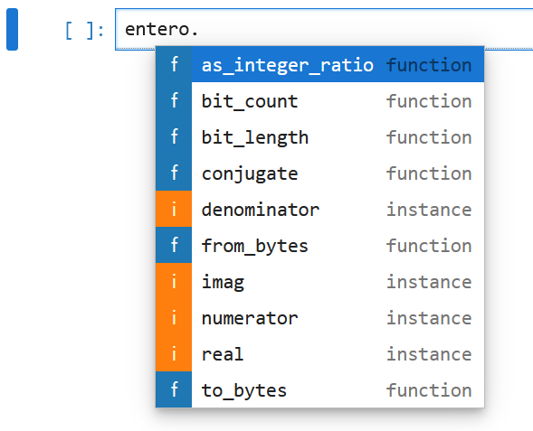
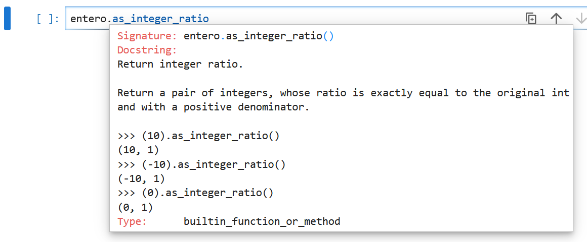

entero = 13Apéndice B — Tipos de datos básicos.
Objetivo. Explicar los tipos de variables básicas que existen en Python.
B.1 Introducción.
En Python se tienen tres tipos de datos básicos:
| Tipo de dato | Ejemplo |
|---|---|
| Numérico | 13, 3.1416, 1+5j |
| Lógico | True, False |
| Cadena | "Frida", "Diego" |
B.2 Tipos númericos.
En Python los tipos de datos númericos son:
- Enteros
- Reales
- Complejos
A continuación se realiza una descripción de estos tipos numéricos. Más información se puede encontrar aquí: Numeric types.
B.2.1 Enteros (int).
Son aquellos que carecen de parte decimal. Para definir un entero hacemos lo siguiente:
Cuando se ejecuta la celda anterior se crea el objeto 13 cuyo nombre es entero. Podemos imprimir el valor de entero y su tipo como sigue:
print(entero, type(entero))13 <class 'int'>Es posible obtener más información del tipo int usando la biblioteca sys:
# Importamos el módulo sys
import sys
# Revisamos la información del tipo entero
print(sys.int_info)sys.int_info(bits_per_digit=30, sizeof_digit=4, default_max_str_digits=4300, str_digits_check_threshold=640)Cuando tenemos números enteros muy grandes, por ejemplo: \(21,346,765,890\) se puede usar el formato: 21_346_765_890 para hacer más claro el número:
# Este es un formato de número entero que usa _ para separar los miles
entero_grande = 21_346_765_890
print(entero_grande, type(entero_grande))21346765890 <class 'int'>Los números enteros también se pueden escribir en formato binario, octal y hexadecimal como sigue:
num_b = 0b01110 # Binario, debe iniciar con 0b
num_o = 0o12376 # Octal, debe iniciar con 0o
num_h = 0x12323 # Hexadecimal, debe iniciar con 0x
print(num_b, type(num_b))
print(num_o, type(num_o))
print(num_h, type(num_h))14 <class 'int'>
5374 <class 'int'>
74531 <class 'int'>B.2.2 Reales (float)
Son aquellos que tienen una parte decimal. Para definir un número real (flotante) se hace como sigue:
pi = 3.141592Cuando se ejecuta la celda anterior, se crea el objeto 3.141592 cuyo nombre es pi. Podemos imprimir el valor de pi y su tipo como sigue:
print(pi, type(pi))3.141592 <class 'float'># Revisamos la información del tipo flotante
print(sys.float_info)sys.float_info(max=1.7976931348623157e+308, max_exp=1024, max_10_exp=308, min=2.2250738585072014e-308, min_exp=-1021, min_10_exp=-307, dig=15, mant_dig=53, epsilon=2.220446049250313e-16, radix=2, rounds=1)B.2.3 Complejos (complex)
Son aquellos que tienen una parte real y una parte imaginaria, y ambas partes son números reales. Por ejemplo:
\[ c = a + b \; j \]
donde \(a\) es la parte real y \(b\) es la parte imaginaria identificada con la letra \(j\).
Para definir un número complejo en Python se hace como sigue:
complejo = 12 + 5j # La parte imaginaria lleva una j al finalCuando se ejecuta la celda anterior, se crea el objeto 12 + 5j cuyo nombre es complejo. En este caso, el contenido de complejo tiene dos partes: la real y la imaginaria. Podemos imprimir el valor de complejo y su tipo como sigue:
print(complejo, type(complejo))(12+5j) <class 'complex'>B.2.4 Atributos y métodos
Los tipos numéricos básicos se crean a partir de las siguientes clases:
- enteros:
<class 'int'>, - flontates:
<class 'float'>y - complejos:
<class 'complex'>.
Una clase define atributos y métodos para los objetos:
- Los atributos definen el estado interno de los objetos (su contenido).
- Los métodos definen el comportamiento de los objetos (qué pueden hacer).
Para conocer los atributos y métodos de los tipos numéricos básicos escribimos el nombre del objeto, agregamos un punto y enseguida presionamos la tecla tabulador (↹), obtendremos algo similar lo mostrado en la figura B.1.

Los métodos están etiquetados como function y los atributos como instance.
En la siguiente celda realiza lo siguiente:
- Teclea
entero.(incluye el punto al final) y luego presiona la tecla TAB (↹). Deberás obtener la lista de atributos y métodos como en la figura B.1. - Elige el método
as_integer_ratio. - Con el cursor al final de
as_integer_ratioteclea SHIFT(⇧) + TAB(↹). Deberás obtener la documentación de los métodos como se muestra en la figura B.2.

Para ejecutar el método deberás primero agregar paréntesis al final del nombre como sigue:
entero.as_integer_ratio()(13, 1)El resultado deberá ser una pareja de enteros cuya división es exactamente igual al número entero original. Recuerda que definimos entero = 13 al principio de este capítulo.
Podemos hacer exactamente lo mismo con el objeto pi:
pi.as_integer_ratio()(3537118140137533, 1125899906842624)Podemos comprobar el resultado dividiendo los enteros que resultan:
3537118140137533 / 11258999068426243.141592Para el caso de números complejos, vamos a elegir los atributos imag y real que proporcionan la parte imaginaria y la parte real del número complejo:
complejo.imag # accedemos a la parte imaginaria5.0complejo.real # accedemos a la parte real12.0Observa que en este caso no se agregaron paréntesis debido a que se trata de atributos y no de métodos.
Finalmente, elegimos conjugate() y vemos el resultado:
complejo.conjugate() # calculamos el conjugado del número complejo.(12-5j)B.3 Tipos lógicos
Es un tipo utilizado para realizar operaciones lógicas y puede tomar dos valores: True o False.
bandera = True
print(bandera, type(bandera))True <class 'bool'>bandera = False
print(bandera, type(bandera))False <class 'bool'>Las variables lógicas aparecen de manera natural en operaciones relacionales o lógicas, que se verán más adelante, por ejemplo:
¿Qué valor es mayor \(3^5\) o \(5^3\)?
Esto lo podemos preguntar como sigue:
3**5 > 5**3True3**5 < 5**3FalseLo anterior lo podemos verificar imprimiendo los valores de \(3^5\) y \(5^3\)
print(3**5, 5**3)243 125B.4 Conversión entre tipos (casting)
Es posible transformar un tipo en otro tipo compatible, a esta operación se lo conoce como casting.
B.4.1 Función int()
Transforma objetos en enteros, siempre y cuando haya compatibilidad.
cadena = '1000'
print(cadena, type(cadena))
entero = int(cadena) # Transformación
print(entero, type(entero))1000 <class 'str'>
1000 <class 'int'>flotante = 3.141592
print(flotante, type(flotante))
entero = int(flotante) # Trunca la parte decimal
print(entero, type(entero))3.141592 <class 'float'>
3 <class 'int'>Si los objetos no son compatibles se genera un error al intentar realizar la conversión:
complejo= 4-4j
entero = int(complejo) # Tipos NO COMPATIBLES--------------------------------------------------------------------------- TypeError Traceback (most recent call last) Cell In[24], line 2 1 complejo= 4-4j ----> 2 entero = int(complejo) # Tipos NO COMPATIBLES TypeError: int() argument must be a string, a bytes-like object or a real number, not 'complex'
Los valores lógicos True y False equivalen a 1 y 0 respectivamente:
entero = int(True)
print(entero)1entero = int(False)
print(entero)0B.4.2 Función str()
Transforma objetos en cadenas, siempre y cuando haya compatibilidad.
entero = 1000
print(entero, type(entero))
cadena = str(entero)
print(cadena, type(cadena))1000 <class 'int'>
1000 <class 'str'>complejo = 5+1j
print(complejo, type(complejo))
cadena = str(complejo)
print(cadena, type(cadena))(5+1j) <class 'complex'>
(5+1j) <class 'str'>B.4.3 Función float()
Transforma objetos en flotantes, siempre y cuando haya compatibilidad.
cadena = '3.141592'
print(cadena, type(cadena))
real = float(cadena)
print(real, type(real))3.141592 <class 'str'>
3.141592 <class 'float'>float(33)33.0float(False)0.0float(3+3j) # NO hay compatibilidad--------------------------------------------------------------------------- TypeError Traceback (most recent call last) Cell In[32], line 1 ----> 1 float(3+3j) # NO hay compatibilidad TypeError: float() argument must be a string or a real number, not 'complex'
B.5 Función isinstance()
Permite saber si un objeto es de un tipo determinado. Por ejemplo:
entero = 13print(isinstance(entero, int))Trueprint(isinstance(3/4, int))Falseprint(isinstance(3/4, float))Trueprint(isinstance(True, bool))Trueprint(isinstance(3+5j, complex))TrueEsta función se puede usar con cualquier tipo definido en Python o tipos definidos por el usuario.
B.6 Constantes
Python contiene una serie de constantes integradas a las que no se les puede cambiar su valor. Más detalles se pueden encontrar en Built-in Constants.
Las principales constantes son las siguientes:
False: de tipo Booleano.True: de tipo Booleano.None: El único valor para el tipoNoneType. Es usado frecuentemente para representar la ausencia de un valor, por ejemplo cuando no se pasa un argumento a una función.NotImplemented: es un valor especial que es regresado por métodos binarios especiales (por ejemplo__eq__(),__lt__(),__add__(),__rsub__(), etc.) para indicar que la operación no está implementada con respecto a otro tipo.Ellipsis: equivalente a..., es un valor especial usado mayormente en conjunción con la sintáxis de slicing de arreglos.__debug__: Esta constante es verdadera si Python no se inició con la opción-O.
Las siguientes constantes son usadas dentro del intérprete interactivo (no se pueden usar dentro de programas ejecutados fuera del intérprete).
quit(code=None)exit(code=None)copyrightcreditslicense
Por ejemplo:
copyright()Copyright (c) 2001-2024 Python Software Foundation.
All Rights Reserved.
Copyright (c) 2000 BeOpen.com.
All Rights Reserved.
Copyright (c) 1995-2001 Corporation for National Research Initiatives.
All Rights Reserved.
Copyright (c) 1991-1995 Stichting Mathematisch Centrum, Amsterdam.
All Rights Reserved.credits() Thanks to CWI, CNRI, BeOpen, Zope Corporation, the Python Software
Foundation, and a cast of thousands for supporting Python
development. See www.python.org for more information.